Международный португальский конкурс на реконструкцию заброшенной фабрики в городе Порто. Согласно заданию на территории должна расположиться автозаправочная станция с общественными функциями и оранжереей.
Руины фабрики согласно заданию можно было сносить, но это полностью противоречит моему подходу к наследию. Проект подразумевает реконструкцию руин и возведение новых компактных павильонов, подчеркивающих масштаб застройки.
Для максимального сохранения свободной площади на замену классической автомобильной парковки была выбрана современная автоматизированная система. Таким образом удалось сохранить треть пространства.
Порто - портовый город, это исходит даже из названия. Использование контейнеров и грузового крана призвано подчеркнуть характер города.
feat. Андрей Стенюшкин
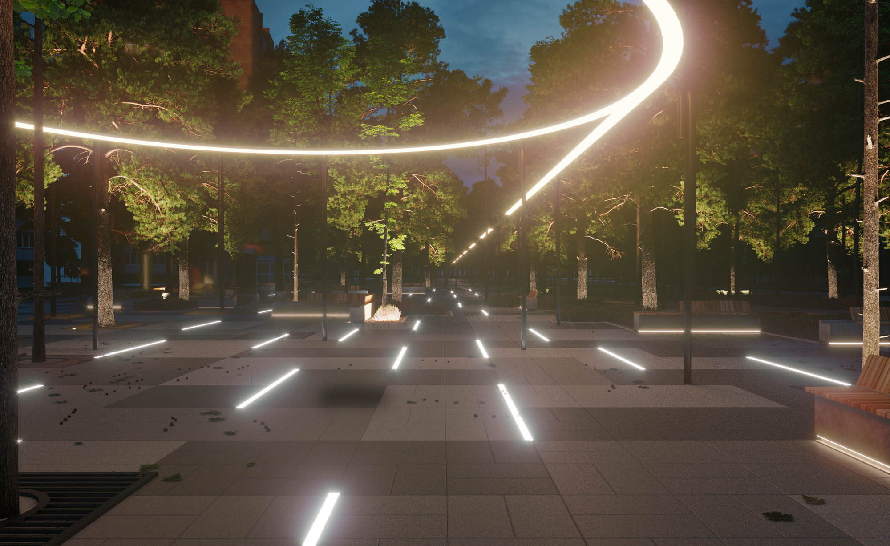
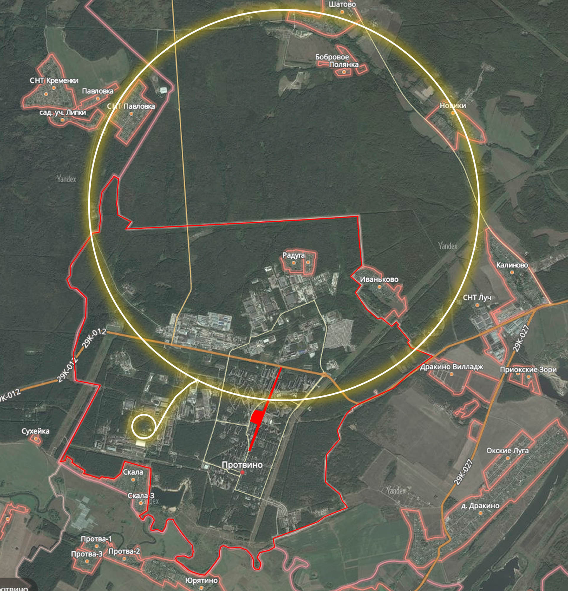
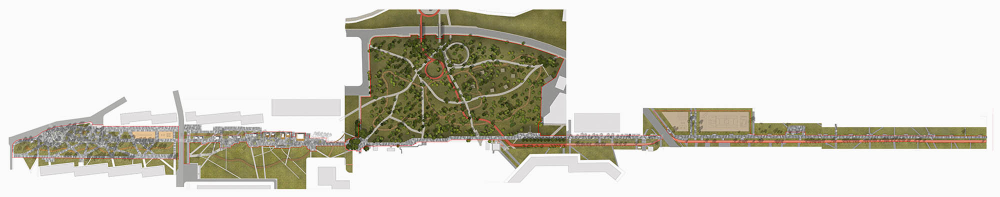
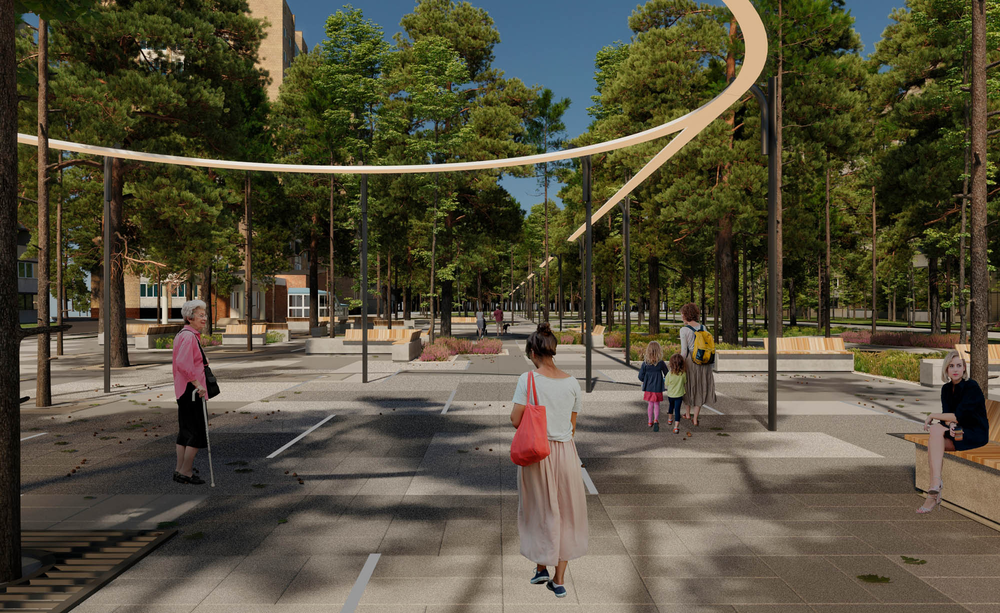
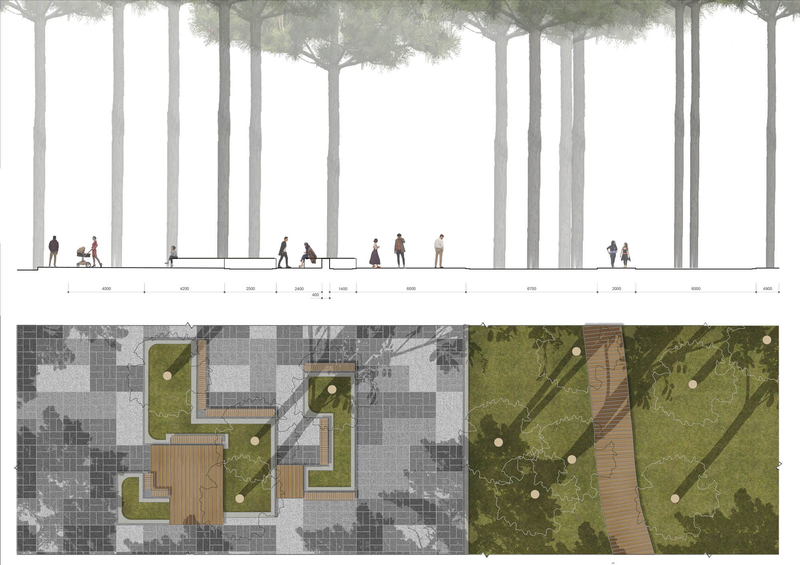
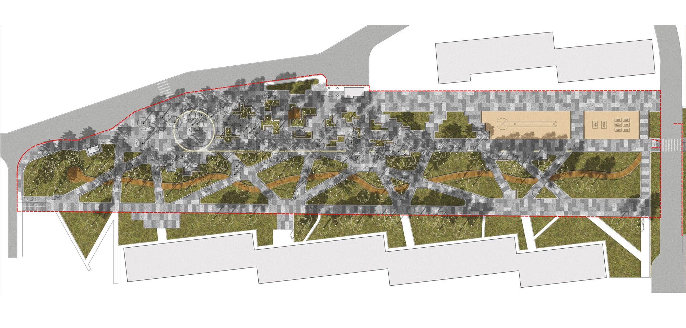
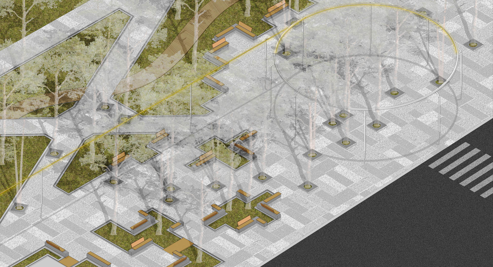
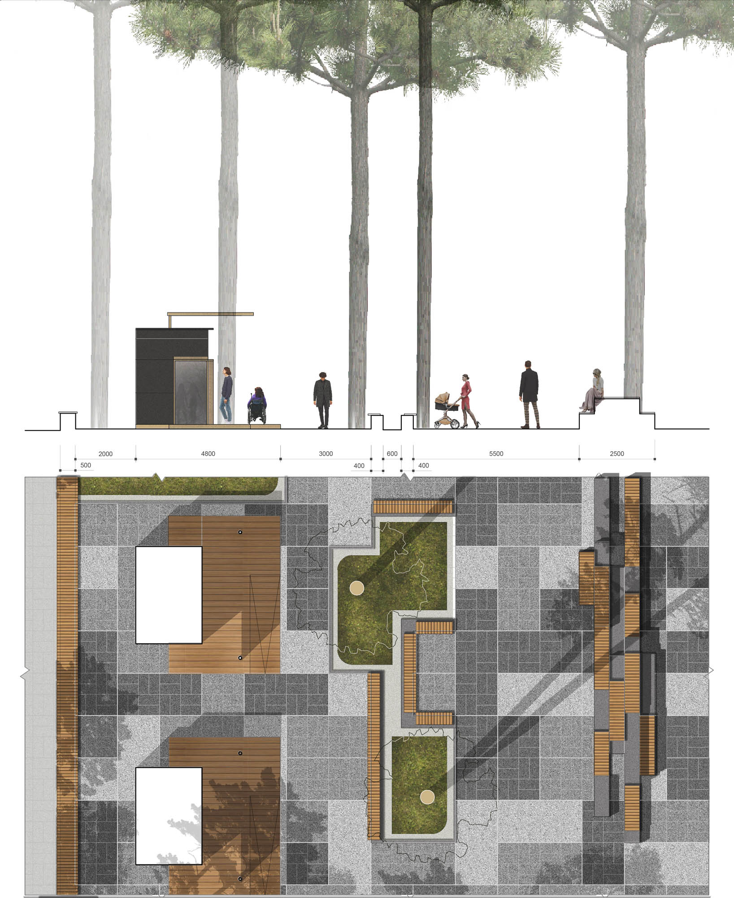
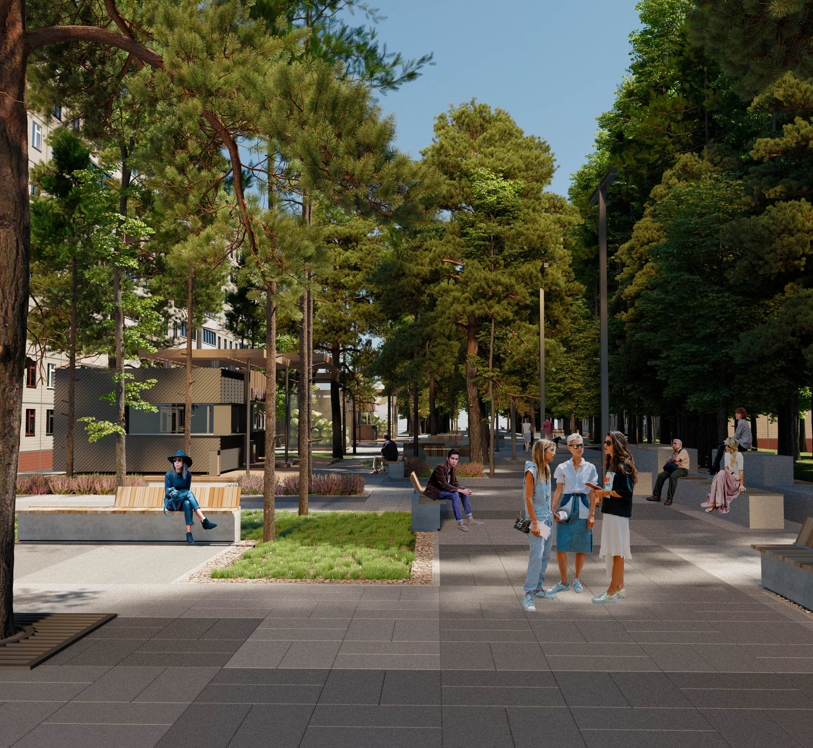
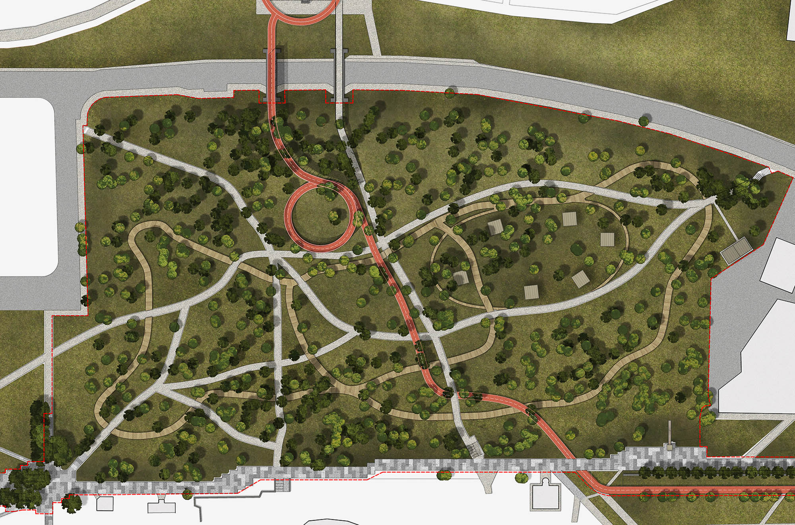
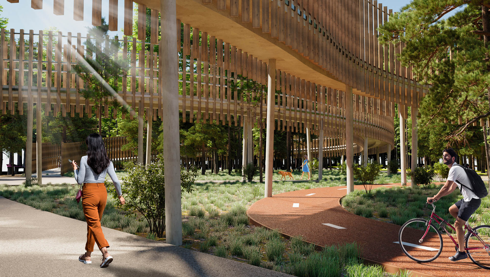
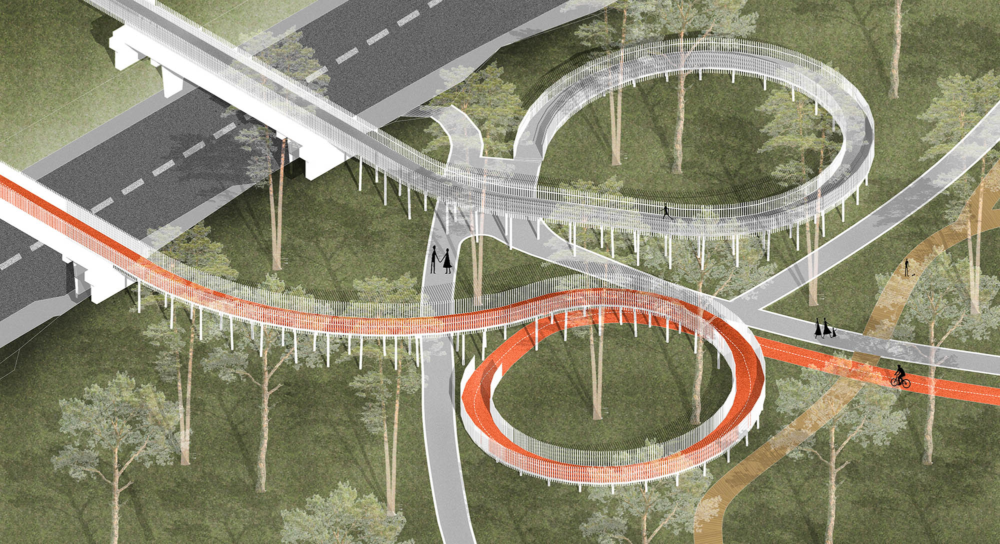
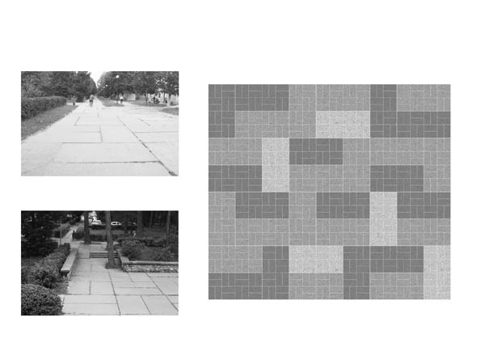
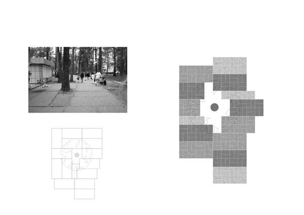
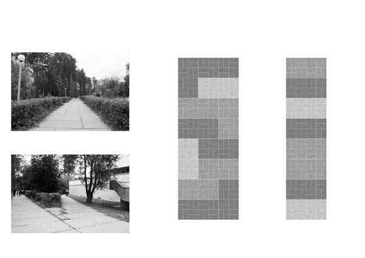
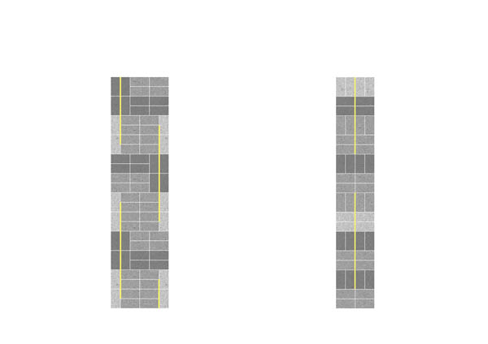
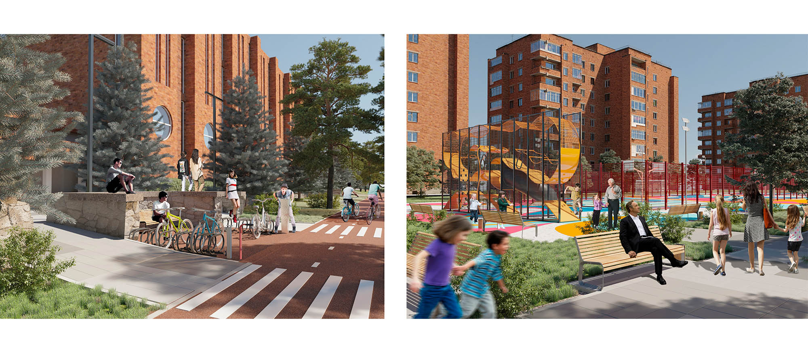